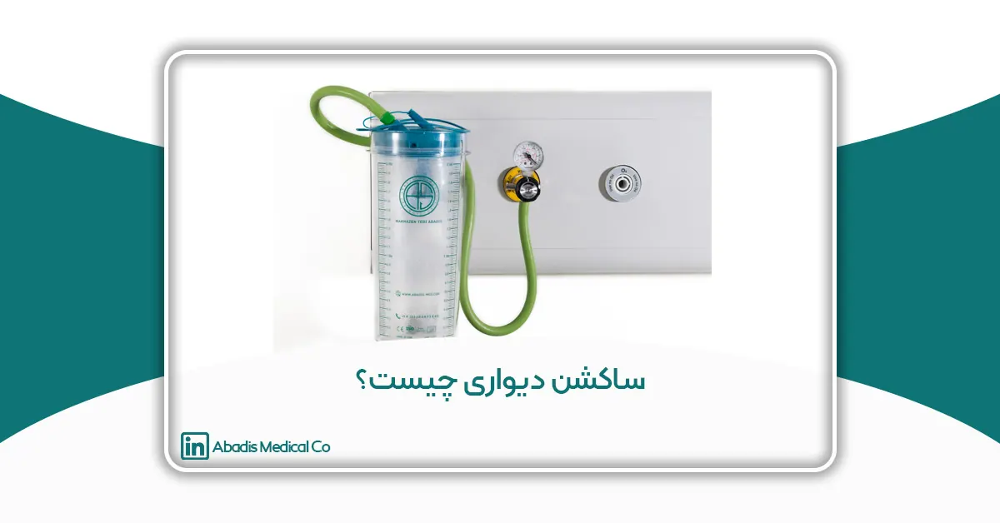
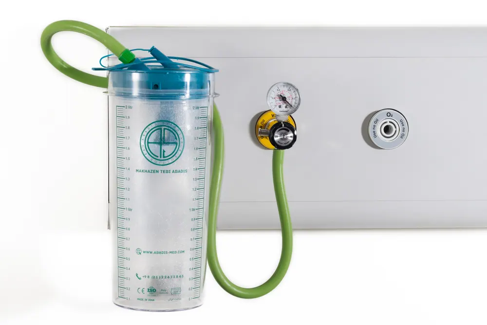

راهنمای جامع انتخاب، کاربرد و مزایای ساکشن دیواری در بیمارستانها
مقدمه
در محیطهای درمانی، حفظ راه هوایی بیمار و تخلیه مؤثر ترشحات یکی از مهمترین اقدامات مراقبتی محسوب میشود. بیماران بستری در بخشهای مراقبت ویژه، اتاق عمل، اورژانس و حتی برخی کلینیکهای تخصصی ممکن است به دلایل مختلفی از جمله اختلالات تنفسی، کاهش سطح هوشیاری، جراحیهای سنگین یا استفاده از ونتیلاتور، قادر به تخلیه طبیعی ترشحات نباشند. در چنین شرایطی استفاده از تجهیزات ساکشن پزشکی نقش حیاتی در حفظ عملکرد تنفسی و پیشگیری از عوارض جدی ایفا میکند.
ساکشن دیواری (Wall Suction Regulator) یکی از پرکاربردترین تجهیزات سیستم وکیوم پزشکی در بیمارستانها است که با استفاده از خلأ تولیدشده توسط شبکه وکیوم سانترال، امکان جمعآوری ترشحات، خون، مایعات و سایر مواد ناخواسته را فراهم میکند. این تجهیز به دلیل عملکرد پایدار، دقت بالا در تنظیم فشار منفی و عدم نیاز به موتور مستقل، به عنوان انتخاب اصلی بسیاری از مراکز درمانی شناخته میشود.
امروزه با توسعه فناوریهای کنترل عفونت، ساکشن دیواری تنها یک ابزار مکش ساده نیست، بلکه بخشی از زیرساخت ایمنی بیمارستان محسوب میشود. استفاده از مخازن استاندارد، فیلترهای محافظ و کیسههای ساکشن یکبارمصرف میتواند خطر انتقال عفونتهای بیمارستانی را به میزان قابل توجهی کاهش دهد و ایمنی بیماران و کارکنان درمانی را ارتقا بخشد.
ساکشن دیواری چیست؟
ساکشن دیواری تجهیزی است که به خروجی سیستم وکیوم مرکزی بیمارستان متصل شده و امکان کنترل و تنظیم فشار منفی مورد نیاز برای تخلیه ترشحات و مایعات بدن را فراهم میکند. این سیستم معمولاً از یک رگولاتور تنظیم فشار، گیج نمایشگر، مخزن جمعآوری ترشحات، فیلترهای ایمنی و اتصالات مرتبط تشکیل شده است.
برخلاف ساکشنهای پرتابل که دارای موتور الکتریکی مستقل هستند، ساکشن دیواری انرژی مورد نیاز خود را از شبکه وکیوم مرکزی بیمارستان دریافت میکند. به همین دلیل عملکرد آن یکنواختتر، کمصداتر و مناسب استفاده مداوم در محیطهای درمانی است.
ساکشن دیواری در طیف گستردهای از اقدامات پزشکی از جمله مراقبتهای تنفسی، جراحیها، مراقبت از بیماران ICU، اورژانس و بخشهای تخصصی مورد استفاده قرار میگیرد و یکی از تجهیزات ضروری هر بیمارستان استاندارد محسوب میشود.

اهمیت ساکشن دیواری در مراقبت از بیمار
راه هوایی باز، مهمترین شرط برای اکسیژنرسانی مناسب به بدن است. تجمع ترشحات، خون یا مایعات در مسیر تنفس میتواند منجر به انسداد راه هوایی، کاهش اکسیژن خون و بروز عوارض جدی شود.
استفاده از ساکشن دیواری به کادر درمان کمک میکند:
- راه هوایی بیمار را باز نگه دارند.
- از بروز آسپیراسیون جلوگیری کنند.
- ترشحات ریوی را تخلیه نمایند.
- کیفیت تهویه مکانیکی را بهبود بخشند.
- شرایط بیماران بستری در ICU را پایدارتر کنند.
- میدان دید جراح را در حین عمل جراحی حفظ کنند.
- خون و مایعات اضافی را از محل جراحی خارج نمایند.
به همین دلیل سیستم ساکشن یکی از تجهیزات حیاتی در تمامی مراکز درمانی مدرن به شمار میرود.
نقش ساکشن دیواری در کنترل عفونت
یکی از موضوعات مهم در بیمارستانهای امروزی، پیشگیری از انتقال عفونتهای بیمارستانی است. تماس مستقیم کارکنان درمانی با ترشحات آلوده میتواند خطر انتقال عوامل بیماریزا را افزایش دهد.
استفاده از ساکشن دیواری همراه با کیسههای ساکشن یکبارمصرف، فیلترهای هیدروفوبیک و مخازن استاندارد مزایای مهمی دارد:
- کاهش تماس مستقیم با ترشحات عفونی
- کاهش خطر آلودگی متقاطع
- جلوگیری از ورود مایعات به سیستم وکیوم مرکزی
- کاهش انتشار آئروسلهای آلوده
- افزایش ایمنی کارکنان درمانی
- سهولت مدیریت پسماندهای عفونی
به همین دلیل بسیاری از دستورالعملهای کنترل عفونت بر استفاده از سیستمهای ساکشن ایمن و تجهیزات یکبارمصرف تأکید دارند.
ساکشن دیواری اطفال؛ اهمیت تنظیم دقیق فشار
بیماران اطفال و نوزادان از نظر فیزیولوژیک حساسیت بیشتری نسبت به بزرگسالان دارند. فشار مکش نامناسب میتواند باعث آسیب به مخاط راه هوایی، خونریزی و بروز عوارض ناخواسته شود.
به همین دلیل در بسیاری از مراکز درمانی پیشرفته از تجهیزات ساکشن متناسب با نیاز بیماران اطفال استفاده میشود. ساکشن دیواری اطفال با قابلیت تنظیم دقیقتر فشار، امکان انجام ساکشن ایمن را در بخشهای کودکان، PICU و NICU فراهم میکند.
شرکت مخازن طبی آبادیس به عنوان نخستین تولیدکننده ایرانی ساکشن دیواری ویژه اطفال، این محصول را با هدف افزایش ایمنی بیماران کمسن و بهبود کیفیت مراقبتهای درمانی طراحی و تولید کرده است.
استانداردهای مهم در انتخاب ساکشن دیواری
هنگام انتخاب ساکشن دیواری باید به موارد زیر توجه شود:
- دقت عملکرد رگولاتور
- پایداری فشار منفی
- کیفیت ساخت بدنه و قطعات
- مقاومت در برابر خوردگی و رطوبت
- خوانایی گیج فشار
- سازگاری با سیستم وکیوم مرکزی بیمارستان
- امکان استفاده از فیلترهای ایمنی
- سازگاری با کیسههای ساکشن یکبارمصرف
- خدمات پس از فروش و تأمین قطعات
انتخاب محصولی باکیفیت میتواند علاوه بر افزایش ایمنی بیمار، هزینههای نگهداری و تعمیرات را نیز کاهش دهد.
جمعبندی
ساکشن دیواری یکی از مهمترین تجهیزات زیرساختی بیمارستانها و مراکز درمانی است که نقش حیاتی در حفظ راه هوایی بیماران، تخلیه ترشحات، کمک به اعمال جراحی و ارتقای کیفیت مراقبتهای پزشکی ایفا میکند.
با توجه به اهمیت کنترل عفونت، استفاده از سیستمهای ساکشن استاندارد در کنار کیسههای ساکشن یکبارمصرف و فیلترهای محافظ، میتواند ایمنی بیماران و کادر درمان را به میزان قابل توجهی افزایش دهد.
امروزه مراکز درمانی علاوه بر توجه به عملکرد مکش، به دنبال تجهیزاتی هستند که دقت، دوام، سهولت استفاده و ایمنی بالاتری ارائه دهند. انتخاب ساکشن دیواری مناسب، سرمایهگذاری مستقیمی در جهت ارتقای کیفیت خدمات درمانی و حفاظت از سلامت بیماران و کارکنان محسوب میشود.
منابع
- World Health Organization (WHO). Medical Device Technical Series: Medical Vacuum Systems. Geneva: WHO.
- World Health Organization (WHO). Safe Management of Wastes from Health-Care Activities. 2nd Edition. Geneva: WHO; 2022.
- Centers for Disease Control and Prevention (CDC). Guidelines for Environmental Infection Control in Health-Care Facilities. Atlanta: CDC; 2023.
- ECRI Institute. Guidance on Medical Suction Equipment Safety and Maintenance. Plymouth Meeting, PA.
- Association for the Advancement of Medical Instrumentation (AAMI). Medical Suction Equipment Standards and Recommendations.
- National Health Service (NHS). Suction Equipment: Clinical Guidance and Safe Use Procedures. United Kingdom.
- Rutala WA, Weber DJ. Disinfection and Sterilization in Healthcare Facilities: Current Issues and New Technologies. American Journal of Infection Control. 2021.
- Siegel JD, Rhinehart E, Jackson M, Chiarello L. Guideline for Isolation Precautions: Preventing Transmission of Infectious Agents in Healthcare Settings. CDC.
- Weber DJ, Rutala WA. Environmental Infection Prevention and Control in Healthcare Facilities. Infection Control & Hospital Epidemiology.
- Occupational Safety and Health Administration (OSHA). Healthcare Worker Protection Against Occupational Exposure to Infectious Materials. Washington DC.
- ISO 10079-1: Medical Suction Equipment – Electrically Powered Suction Equipment.
- ISO 7396-1: Medical Gas Pipeline Systems – Pipeline Systems for Compressed Medical Gases and Vacuum.
- HTM 02-01. Medical Gas Pipeline Systems. National Health Service (NHS), United Kingdom.
- European Centre for Disease Prevention and Control (ECDC). Infection Prevention and Control in Healthcare Settings. Stockholm: ECDC.
- Association of periOperative Registered Nurses (AORN). Guidelines for Perioperative Practice – Surgical Suction and Fluid Management.